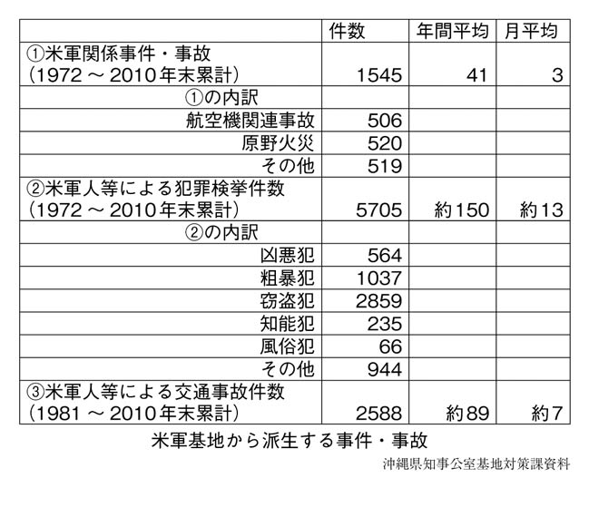

行間に挿入する画像
履歴からいえば僕は一家のルーツの地を知らずに育った沖縄人二世で、仲村家が定住した大阪の此花区で十八歳まで同居している。

普天間基地移設問題では「最低でも県外」と明言した鳩山由紀夫首相が、「辺野古現行案」に回帰するという極めつきの公約違反までやってのけた。このときには「平成の琉球処分」という声まであがったぐらいで、県民にとって忘れられない日となった。
にもかかわらず、県民のほとんどがその国家への帰属を肯定する回答を示したのである。どうにも理解に苦しんでしまうが、実のところ、「復帰してよかった」という回答は過去実施したどの世論調査をみても高い。
加えて日本復帰に際しては核兵器の持ち込みや、軍用地の復元費などをめぐって、さまざまな密約が日米両首脳の間でかわされていたことも明らかになっている。
行中に挿入する画像
ニュースは生まれ育った大阪で見ている。